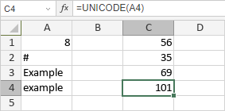

UNICODE funkcija
Funkcija UNICODE je jedna od funkcija za tekst i podatke. Koristi se za vraćanje broja (kodne tačke) koji odgovara prvom znaku teksta.
Sintaksa
UNICODE(text)
Funkcija UNICODE ima sledeći argument:
| Argument | Opis |
|---|---|
| text | Tekstualni niz koji počinje znakom za koji želite da dobijete Unicode vrednost. |
Napomene
Kako primeniti funkciju UNICODE.
Primeri
Slika ispod prikazuje rezultat koji vraća funkcija UNICODE.
